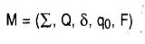
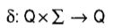
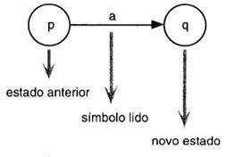
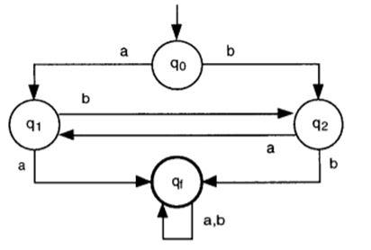
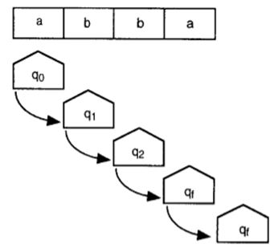

2.5 Automato Finito Deterministico
Um Autômato Finito Determinístico (AFD) ou simplesmente Autômato Finito (AF) M é uma 5 dupla

Onde:
∑ Alfabeto de símbolos de entrada;
Q conjunto de estados possíveis do autômato o qual é finito;
Q conjunto de estados possíveis do autômato o qual é finito;

δ função programa ou função de transição:
Q a qual é uma função parcial;
q₀ estado inicial tal que q₀ é elemento de Q;
A função programa ou função de transição pode ser representada como um grafo finito direto:

Considere a linguagem:
L₁ = {w | w possui aa ou bb como subpalavra}
Onde δ₁ é como abaixo representado na forma de uma tabela, reconhece a linguagem L₁.
O Algoritmo abaixo representado pelo grafo ilustrado usa os estados q₁ e q₂ para “memorizar” o símbolo anterior. Assim, q₁ representa “símbolo anterior é a” e q₂ representa “símbolo anterior é b”. Após identificar dois a ou dois b consecutivos, o autômato assume o estado qf (final) e varre o sufixo da palavra de entrada, sem qualquer controle lógico, somente para terminar o processamento.

Abaixo a sequência do processamento do Autômato Finito M₁ para a entrada w = abba, a qual é aceita.
